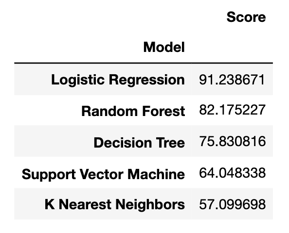
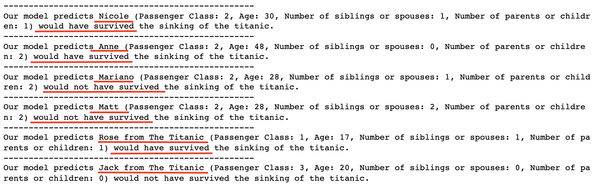

The goal of this project was to test five machine learning models on how accurately they could predict whether or not a person survived or died during the sinking of the titanic. As such, after training and testing each of our models we compared each of their accuracy scores. Here is a table of the results:
As you can see, the logistic regression classifier was the most accurate of the models we trained, and K-Nearest Neighbors was the least. After finding the most accurate classifier, we decided to put our own information and some characters from the film into our model to predict whether or not we would have survived or died. Here are the results:
